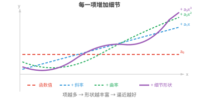
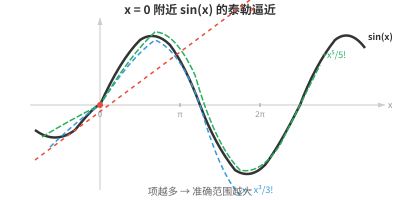

函数逼近（Function Approximation）¶
函数逼近用足够有用的简单函数替代复杂函数。本节介绍线性化、泰勒级数、多项式逼近、傅里叶级数和通用逼近定理。通用逼近定理是神经网络能够学习任意映射的理论基础。
- 我们遇到的许多函数过于复杂，无法直接处理。手算 \(e^{0.1}\)、预测卫星轨迹等，都涉及没有简单闭式解的函数。
大白话
有些函数能精确写出却不好直接算，有些问题连简单公式都没有；这时我们宁可找一个足够准、又容易用的替身。
- 函数逼近（function approximation）在我们关心的区域内，用“足够接近”的简单函数替代复杂函数。
大白话
逼近不是假装两个函数处处相同，而是在真正要用的范围内，简单版本已经准到够用。
- 最自然的逼近函数是多项式。多项式只是若干 \(x\) 的幂及其系数之和，容易计算、求导和积分。
大白话
多项式像数学里的积木：加、乘、求导和积分都很方便，所以常被拿来拼出复杂曲线的近似。
- 但多项式为什么如此适合逼近？看看 \(x\) 的每一项幂分别带来什么：
大白话
多项式的每一项都负责一种形状效果，从定位置到加倾斜、加弯曲，再逐步补足细节。
-
常数项 \(a_0\) 确定基准值。
大白话
常数项把整条曲线整体抬高或压低，决定它从哪里起步。
-
项 \(a_1 x\) 增加斜率。
大白话
一次项负责让曲线向某个方向倾斜，系数越大，倾斜越明显。
-
项 \(a_2 x^2\) 增加曲率。
大白话
二次项让直线开始弯起来，决定它更像碗还是倒扣的碗。
-
每个更高次幂都捕捉函数形状中更细致的特征。
大白话
更高次项像更细的调节旋钮，可以修正前面粗略形状没有贴合到的细节。

- 通过选择合适的系数，我们可以逐项匹配函数在某一点的值、斜率、曲率和更高阶行为。
大白话
调整系数，就是让替身函数在目标点不仅站在同一高度，还朝同一方向、以相同方式弯曲。
- 项数足够时，多项式几乎可以模仿任意平滑函数。
大白话
只要原函数足够平滑，多给一些合适的项，就能让多项式在目标范围内贴得很近。
- 问题变成：怎样找到正确的系数？
大白话
会用多项式只是第一步，真正要解决的是怎样让每个积木的大小恰好合适。
- 线性化（linearisation）是最简单的逼近。在点 \(x = a\) 附近，我们用函数的切线替换该函数：
大白话
在很小的一块范围里，弯曲的线看起来近似直，因此可以先用该点的切线冒充原曲线。
- 这是一阶泰勒逼近（Taylor approximation）。它表示：从已知值 \(f(a)\) 出发，再根据斜率乘以距 \(a\) 的距离进行调整。
大白话
从锚点的真实值起步，离锚点多远就按当前坡度补多少，这就是最基础的一阶预测。
- 例如，在 \(x = 0\) 处线性化 \(sin(x)\)：\(f(0) = 0\)、\(f'(0) = \cos(0) = 1\)，因此 \(L(x) = x\)。在零点附近，\(sin(x) \approx x\)。试试看：\(sin(0.1) = 0.0998\ldots \approx 0.1\)。
大白话
\(\sin x\) 在 0 附近的切线正好是 \(y=x\)，所以角度很小时，用 \(x\) 代替 \(\sin x\) 已经很准。
- 但线性化只在非常靠近 \(a\) 时有效。离得更远，逼近就会失效。为了做得更好，我们加入高阶项。
大白话
切线只看见一个点附近的坡度，走远后就跟不上曲线的弯曲；高阶项用来补上这些弯曲信息。
- 泰勒级数（Taylor series）将函数表示为多项式项的无穷和，每一项都捕捉函数在点 \(a\) 附近行为中更细致的特征：
大白话
泰勒级数从切线开始，一层层加入曲率和更高阶细节，逐步把简单多项式修到接近原函数。

- 每增加一项都是一次修正。第一项匹配函数值，第二项匹配斜率，第三项匹配曲率，依此类推。加入的项越多，逼近准确的区域越大。
大白话
前几项先把位置、方向和弯曲对齐，后面的项继续修细节；通常项越多，能放心使用的范围越大。
- 分母中的 \(n!\) 并非随意出现。将 \((x - a)^n\) 恰好求 \(n\) 次导数，结果为 \(n!\)。阶乘会将这一结果抵消，确保泰勒多项式在 \(x = a\) 处的第 \(n\) 阶导数等于原函数的第 \(n\) 阶导数。
大白话
阶乘是校准用的：它刚好抵消反复求导带来的倍数，让每一阶导数都能在中心点精确对上原函数。
- 麦克劳林级数（Maclaurin series）就是以 \(a = 0\) 为中心的泰勒级数：
大白话
麦克劳林级数没有新方法，只是把泰勒展开的中心点固定在最常用的 0。
- 一些著名的麦克劳林级数：
大白话
下面这些常用函数都能用一串简单幂次相加来近似，实际计算时通常只取前面有限项。
- 注意，\(\sin x\) 只包含奇数次幂，因为它是奇函数；\(\cos x\) 只包含偶数次幂，因为它是偶函数。交替的符号使逼近值在真实值两侧摆动并从两侧收敛。
大白话
\(\sin x\) 左右翻转会变号，所以只保留奇次项；\(\cos x\) 左右翻转不变，所以只保留偶次项。正负交替会让近似值来回修正而不是一直偏向一边。
- 用四项近似 \(e^{0.5}\)：\(1 + 0.5 + \frac{0.25}{2} + \frac{0.125}{6} = 1 + 0.5 + 0.125 + 0.02083 \approx 1.6458\)。真实值为 \(1.6487\ldots\)，因此只用四项就已得到三位正确的小数。
大白话
不需要真的加到无穷项；在合适的位置，取少数几项就能达到实际所需精度。
- 并非每个泰勒级数都处处收敛。收敛半径（radius of convergence）告诉我们，级数从中心 \(a\) 向外多远仍能给出有效结果。在该半径内，加入更多项可使多项式逼近任意精确；在半径外，级数发散。
大白话
泰勒级数有自己的有效活动范围：离中心太远时，多加项不一定更准，甚至会彻底跑偏。
- 幂级数（power series）的一般形式是：\(\sum_{n=0}^{\infty} a_n (x - c)^n\)。泰勒级数是系数由导数确定的幂级数；其他幂级数的系数可能由别的规则定义。比值判别法（ratio test）用于确定收敛性：计算 \(\lim_{n \to \infty} \left|\frac{a_{n+1}}{a_n}\right|\)。若极限为 \(L\)，则收敛半径为 \(R = 1/L\)。
大白话
幂级数是按幂次叠加的一大类公式，泰勒级数只是其中系数来自导数的一种。比值判别法用相邻项增长得多快，判断它能在哪个范围稳定下来。
- 当我们在第 \(n\) 项后截断泰勒级数时，会产生误差。拉格朗日余项（Lagrange remainder）给出该误差的上界：
大白话
只取有限项一定会漏掉后面部分；余项公式不必知道精确漏了多少，也能给出“最多会错多少”的上限。
- 这里的 \(c\) 是 \(a\) 与 \(x\) 之间的某个未知点。我们无法准确知道 \(c\)，但通常可以给 \(|f^{(n+1)}(c)|\) 设定上界，从而得到最坏情况的误差估计。分母中的 \((n+1)!\) 增长极快，因此对于收敛半径内的函数，随着项数增加，误差会迅速缩小。
大白话
虽然不知道误差具体藏在中间哪个点，但只要能限制最高阶导数的大小，就能保证误差不会超过某个数。阶乘增长很快，是高阶项常常迅速变小的原因。
- 对多变量函数，泰勒展开包含混合偏导数。\(f(\mathbf{x})\) 在点 \(\mathbf{a}\) 附近的二阶逼近为：
大白话
多变量时，除了分别看每个方向的弯曲，还要看一个方向的移动会怎样影响另一个方向，因此会出现混合项。
- 第一项是函数值，第二项使用梯度，即我们在多元微积分中看到的向量，第三项使用海森矩阵，即捕捉曲率的矩阵。这将矩阵章节直接连接到微积分：海森矩阵由二阶导数构成，描述函数曲面的形状。
大白话
二阶近似分三层：先定当前位置，再按梯度补坡度，最后按海森矩阵补弯曲；向量和矩阵正好各负责一层信息。
- 这个多元二阶逼近是牛顿法（Newton's method）和其他二阶优化技术的基础，下一节将会介绍。
大白话
优化不只看脚下往哪走，还利用地面弯曲程度预测谷底方向，这就是二阶方法通常比只看梯度更聪明的地方。
- 除多项式外，还有几种值得了解的逼近方法：
大白话
多项式很通用，但不同类型的信号和数据有更合适的替身模型，下面列出几种常见选择。
-
样条插值（spline interpolation）：不用一个高次多项式，而是平滑地拼接多个低次多项式。这能避免高次多项式可能产生的剧烈振荡。
大白话
与其用一根很长又容易乱晃的弯尺，不如把许多短而稳定的小弯尺平滑接起来。
-
傅里叶级数（Fourier series）：将周期函数近似为正弦和余弦之和，是信号处理和音频领域的核心方法。
大白话
复杂的周期波形可以拆成许多不同频率的简单正弦、余弦波再叠加，像把声音拆成不同音调。
-
神经网络（neural networks）：通用函数逼近器。只要神经元足够多，它们能够以任意精度逼近任何连续函数。这是深度学习的理论依据。
大白话
神经网络有足够容量时可以学出非常复杂的输入输出关系；定理保证“能表示”，但不保证训练一定能轻松找到那组参数。
- 若函数具有使逼近可靠的性质，就称其“性质良好（well-behaved）”：连续性，即没有跳跃；可微性，即没有尖角；光滑性，即各阶导数都存在；有界性，即输出保持有限。
大白话
函数越不突然跳跃、越不尖锐、越不失控，局部信息就越能代表附近情况，逼近也越值得信赖。
- 多项式、指数函数和三角函数都属于性质良好的函数。函数性质越好，得到良好逼近所需的泰勒项越少。
大白话
变化规整的函数不需要很多项就能跟上；形状越麻烦，往往需要更多项或换一种逼近工具。
编程任务（使用 CoLab 或 notebook）¶
-
用不断增加的泰勒项近似 \(e^x\)，并可视化逼近如何改善。
import jax.numpy as jnp import matplotlib.pyplot as plt x = jnp.linspace(-2, 3, 300) plt.plot(x, jnp.exp(x), "k-", linewidth=2, label="eˣ (exact)") colors = ["#e74c3c", "#3498db", "#27ae60", "#9b59b6"] for n, color in zip([1, 2, 4, 8], colors): approx = sum(x**k / jnp.array(float(jnp.prod(jnp.arange(1, k+1)) if k > 0 else 1)) for k in range(n+1)) plt.plot(x, approx, color=color, linestyle="--", label=f"{n} terms") plt.ylim(-2, 15) plt.legend() plt.title("Taylor approximation of eˣ") plt.show() -
计算拉格朗日余项，为用不同数量泰勒项近似 \(\sin(1)\) 的误差给出上界。
import jax.numpy as jnp x = 1.0 exact = jnp.sin(x) taylor = 0.0 for n in range(8): sign = (-1)**n factorial = float(jnp.prod(jnp.arange(1, 2*n+2))) taylor += sign * x**(2*n+1) / factorial error = abs(exact - taylor) bound = x**(2*n+3) / float(jnp.prod(jnp.arange(1, 2*n+4))) print(f"terms={n+1} approx={taylor:.10f} error={error:.2e} bound={bound:.2e}") -
比较 \(cos(x)\) 在 \(x = 0\) 附近的线性化与二次泰勒逼近。将两种逼近与真实函数一起绘制，观察各自准确的范围。
import jax.numpy as jnp import matplotlib.pyplot as plt x = jnp.linspace(-3, 3, 300) plt.plot(x, jnp.cos(x), "k-", linewidth=2, label="cos(x)") plt.plot(x, jnp.ones_like(x), "--", color="#e74c3c", label="linear: 1") plt.plot(x, 1 - x**2/2, "--", color="#3498db", label="quadratic: 1 - x²/2") plt.plot(x, 1 - x**2/2 + x**4/24, "--", color="#27ae60", label="4th order") plt.ylim(-2, 2) plt.legend() plt.title("Taylor approximations of cos(x)") plt.show()